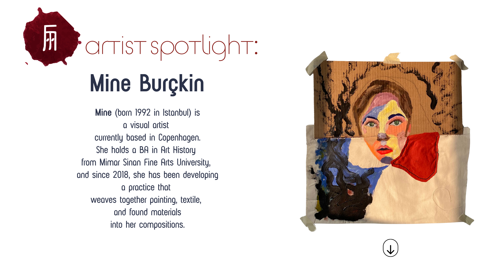
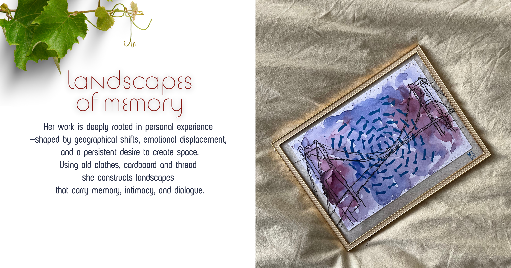
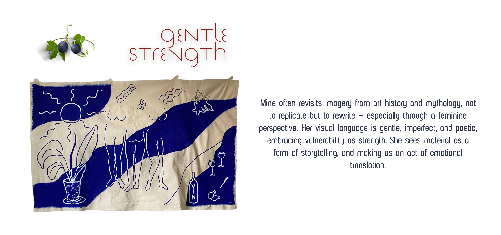
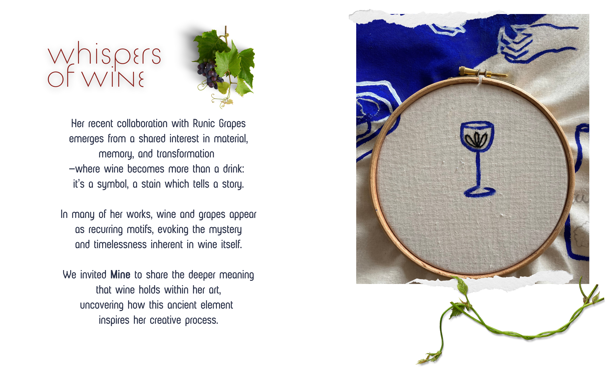
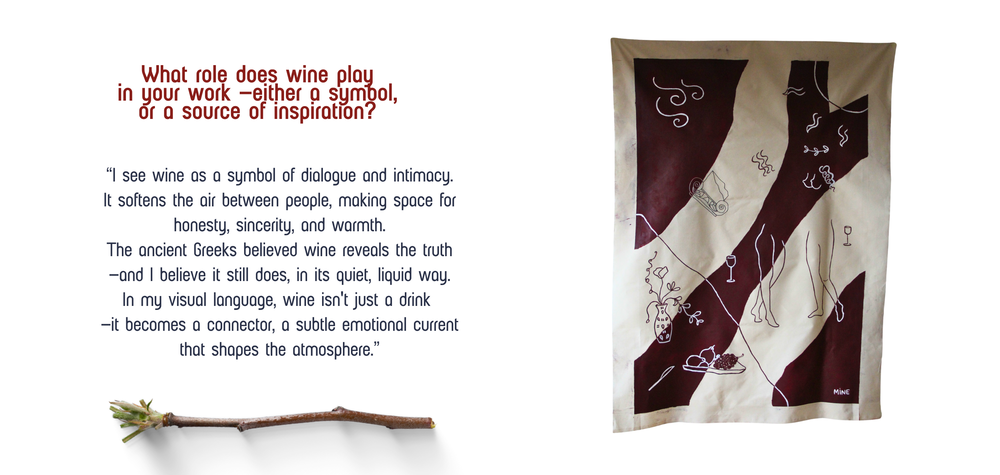
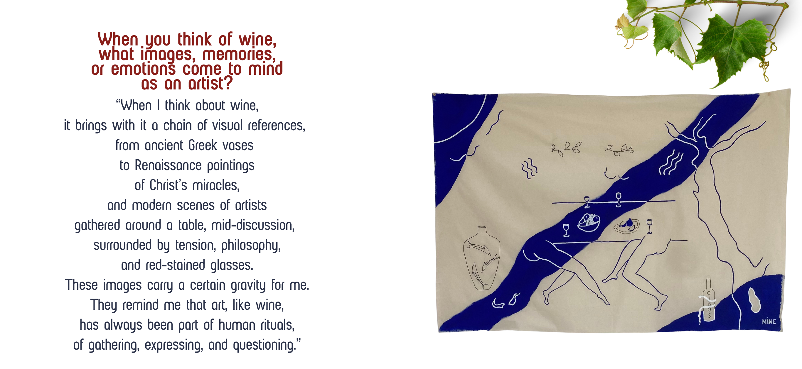
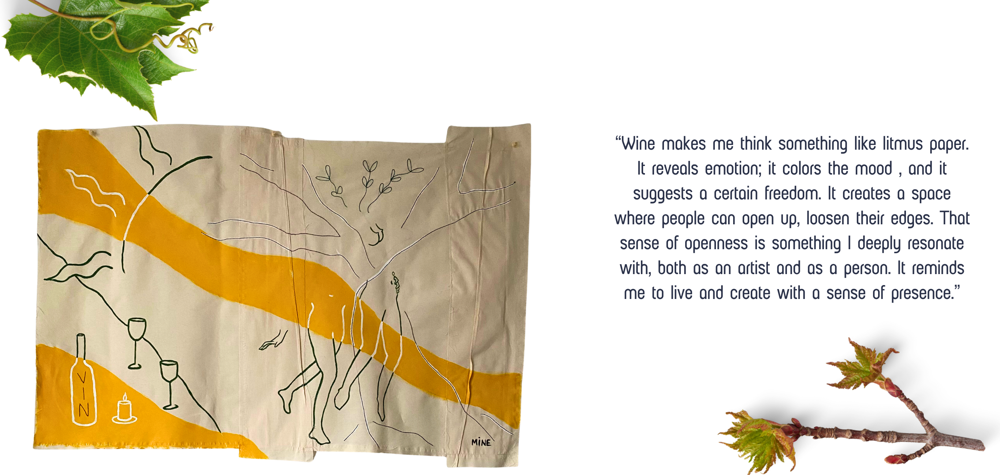
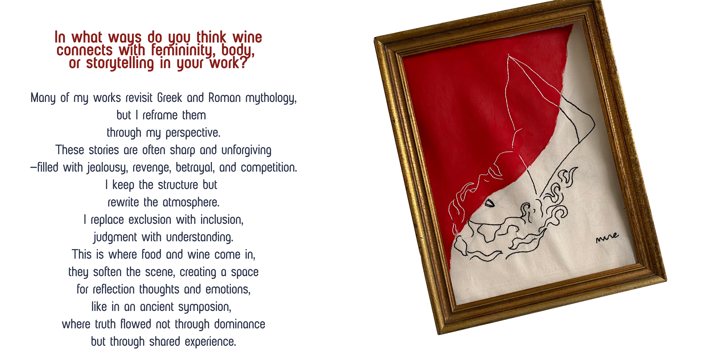
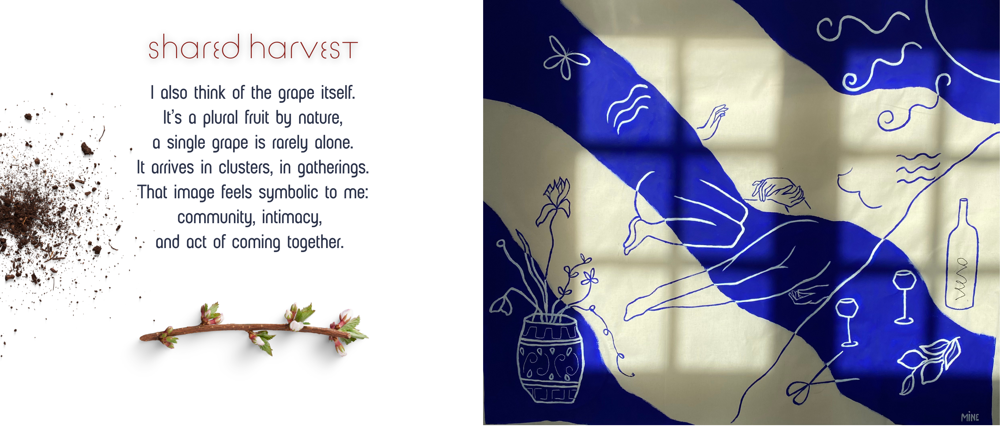
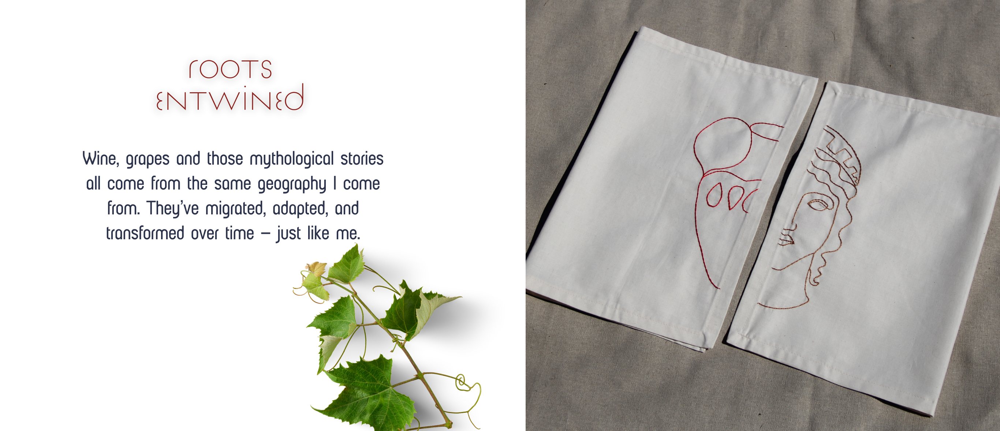

artist spotlight
Mine (born 1992 in Istanbul) is a visual artist currently based in Copenhagen. She holds a BA in Art History from Mimar Sinan Fine Arts University, and since 2018, she has been developing a practice that weaves together painting, textile, and found materials into her compositions.


Her work is deeply rooted in personal experience — shaped by geographical shifts, emotional displacement, and a persistent desire to create space.
Using old clothes, cardboard and thread she constructs landscapes that carry memory, intimacy, and dialogue.
Mine often revisits imagery from art history and mythology, not to replicate but to rewrite — especially through a feminine perspective. Her visual language is gentle, imperfect, and poetic, embracing vulnerability as strength.
She sees material as a form of storytelling, and making as an act of emotional translation.


Her recent collaboration with Runic Grapes emerges from a shared interest in material, memory, and transformation — where wine becomes more than a drink: it's a symbol, a stain which tells a story.
In many of her works, wine and grapes appear as recurring motifs, evoking the mystery and timelessness inherent in wine itself.
We invited Mine to share the deeper meaning that wine holds within her art, uncovering how this ancient element inspires her creative process.
"I see wine as a symbol of dialogue and intimacy. It softens the air between people, making space for honesty, sincerity, and warmth. The ancient Greeks believed wine reveals the truth — and I believe it still does, in its quiet, liquid way. In my visual language, wine isn't just a drink — it becomes a connector, a subtle emotional current that shapes the atmosphere."

"When I think about wine, it brings with it a chain of visual references, from ancient Greek vases to Renaissance paintings of Christ's miracles, and modern scenes of artists gathered around a table, mid-discussion, surrounded by tension, philosophy, and red-stained glasses. These images carry a certain gravity for me. They remind me that art, like wine, has always been part of human rituals, of gathering, expressing, and questioning."


"Wine makes me think something like litmus paper. It reveals emotion; it colors the mood, and it suggests a certain freedom. It creates a space where people can open up, loosen their edges. That sense of openness is something I deeply resonate with, both as an artist and as a person. It reminds me to live and create with a sense of presence."
"Many of my works revisit Greek and Roman mythology, but I reframe them through my perspective. These stories are often sharp and unforgiving — filled with jealousy, revenge, betrayal, and competition. I keep the structure but rewrite the atmosphere. I replace exclusion with inclusion, judgment with understanding. This is where food and wine come in, they soften the scene, creating a space for reflection thoughts and emotions, like in an ancient symposion, where truth flowed not through dominance but through shared experience."

"I also think of the grape itself. It's a plural fruit by nature, a single grape is rarely alone. It arrives in clusters, in gatherings. That image feels symbolic to me: community, intimacy, and act of coming together."


"Wine, grapes and those mythological stories all come from the same geography I come from. They've migrated, adapted, and transformed over time — just like me."
Stay tuned to see what Mine brings to life for runic grapes!